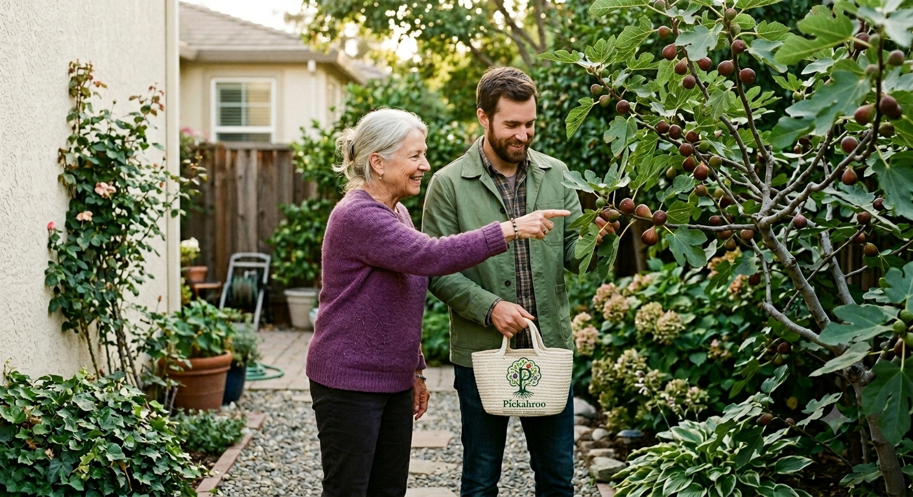
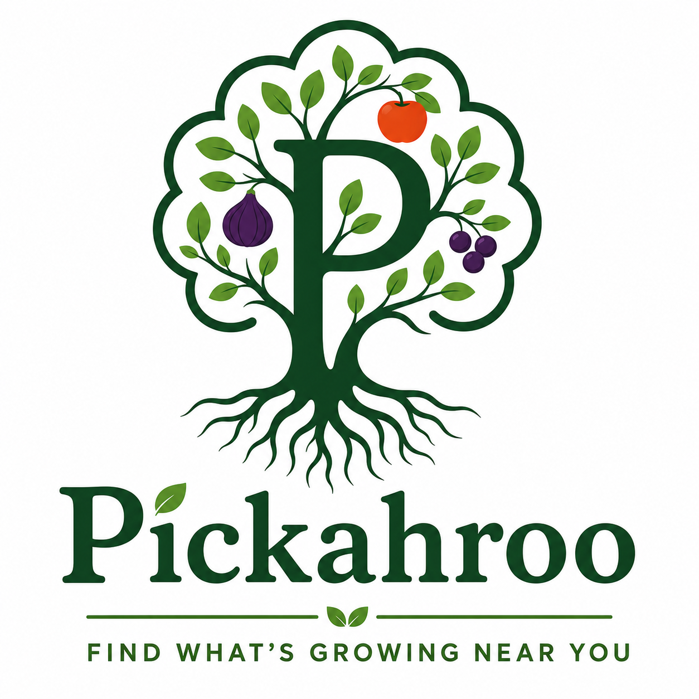

Brand Guidelines
Pickahroo helps people find fruit trees, berry patches, nut trees, gardens, and local harvests shared by their community.
The brand should feel local, useful, grounded, and warm. It is a community harvest map first and a technology product second.
Start Guide
Our Personality
Pickahroo is practical, neighborly, curious, and trustworthy. It invites people outdoors and helps them notice the abundance already growing around them.
Logo
The Mark
The primary logo uses a tree built around the letter P. The P becomes the trunk, the canopy frames the harvest, and the roots communicate a grounded local community.
- Keep the tree outline intact.
- Preserve the relationship between the P, canopy, fruit, and roots.
- Use the full logo for websites, flyers, banners, and launch materials.
- Use the tree mark alone for favicons, app icons, stickers, and social profiles.
App Icon Specifications
The app icon is a simplified execution of the tree mark, optimized for small-scale clarity. It must be centered within a rounded-square container to maintain visual harmony across mobile home screens.

Color
The color system is natural but not dull. Forest green carries trust and growth, harvest orange provides energy, fig purple supports food variety, and cream keeps layouts warm.
Deterministic AI Agent Color Mapping
When generating interfaces or layouts, autonomous agents must parse colors using these token roles to prevent high-contrast failures or branding shifts:
| Token Name | Target Value | AI Functional Rule |
|---|---|---|
| --bg-primary | #F7F5EE (Cream) | Mandatory canvas background. Never use pure white (#FFF) for panels or body. |
| --text-main | #08140D (Ink) | Default for long prose, labels, and paragraph readouts. Ensures high readability. |
| --text-headline | #1F5D3A (Forest) | Apply to h1, h2, and heavy semantic card headers. Never use neon accents here. |
| --cta-primary | #E96B2C (Harvest) | Reserve exclusively for main interaction nodes (e.g., "List a Tree"). Maximum 5% UI space. |
Typography
Headlines
Use a strong serif for headlines. It gives the brand a grounded, agricultural quality without feeling old-fashioned.
Body Copy
Use a clean sans serif for paragraphs, captions, buttons, forms, and app interface text. It should be easy to read on mobile screens and Digtal Flyers.
Font
Primary Brand Font
Pickahroo should use a warm serif font for major brand moments. The serif gives the identity a grounded, orchard-like quality while still feeling polished enough for a modern product.
- Use for page headlines, printed flyer headlines, campaign titles, and large brand statements.
- Recommended web-safe option: Georgia.
- Recommended Google Font alternative: Merriweather.
- Use bold or black weights for strong headline presence.
Find What's Growing Near You
Secondary Interface Font
Use a clean sans serif for body copy, app screens, buttons, labels, forms, menus, captions, and longer reading passages. It should be practical, readable, and quiet.
- Recommended system stack: Inter, system-ui, Segoe UI, Arial, sans-serif.
- Recommended Google Font alternative: Inter.
- Use regular weight for body copy and bold weight for interface labels.
Discover local fruit trees, berry patches, nut trees, gardens, and harvests shared by your community.
Type Scale
- Hero headline: 64px to 86px
- Section headline: 42px to 70px
- Card headline: 26px to 36px
- Body copy: 18px to 20px
- Small labels: 12px to 14px, uppercase, generous letter spacing
Font Rules
- Do not use playful novelty fonts.
- Do not use script fonts for core brand text.
- Keep line spacing open and readable.
- Use dark green or black for most text.
- Reserve harvest orange for emphasis and calls to action.
Photography & AI Imagery
Photography should feel like a neighbor inviting you to discover something growing just around the corner. Use real trees, real harvests, real gardens, and real people whenever possible. When utilizing Generative AI for quick asset creation, you must intentionally prompt against the machine's urge to look "perfect."
 Tree Before Harvest
Tree Before Harvest
 Fresh Harvest Bounty
Fresh Harvest Bounty
 Neighbors Gathering Outdoors
Neighbors Gathering Outdoors
Use
- Natural, authentic outdoor light (sun glare, soft overcast)
- Real, imperfect fruit trees and messy backyard gardens
- Seasonal, non-uniform produce
- Genuinely diverse families, neighbors, and local growers
- Warm, honest color correction
- Weathered, hand-hewn, and textured wood elements
Avoid
- Generic corporate stock photos
- Images that look artificially generated or hyper-polished
- Heavy filters or oversaturated colors
- Sterile studio food photography
- Photos that feel staged, forced, or transactional
- Pristine, flawless plastic bins or sterile modern surfaces
The Pickahroo AI Prompt Formula
To generate on-brand imagery using tools like Midjourney or DALL-E, construct your text prompts using this exact 4-part modular matrix:
- The Setting & Vibe: Begin with an unposed, casual outdoor atmosphere (e.g., "A candid, unposed snapshot taken in a real, lived-in community garden...").
- The Subject & Material: Define the natural harvest item and prioritize organic textures over plastics (e.g., "...focusing on a rustic wooden crate overflowing with freshly harvested green plums.").
- The Brand Color Injection: Explicitly mention our brand tones (e.g., "The palette must feature rich harvest orange (#E96B2C) and leaf green (#6BAA44) with soft cream (#F7F5EE) highlights.").
- The Anti-AI Camera Tag: Force the generator to look organic and human-made (e.g., "Shot on an older model mobile phone, slight digital noise, natural shadows, imperfect lens clarity, completely avoiding a sterile, hyper-sharp, or artificially perfect aesthetic.").
Master Prompt Example:
"A realistic, slightly grainy snapshot taken on an older model iPhone of a rustic wooden crate overflowing with freshly harvested heirloom tomatoes. The tomatoes are a mix of vibrant colors aligning with the brand palette: rich harvest orange (#E96B2C), deep fig purple (#6B3E87), and leaf green (#6BAA44). The crate sits on a weathered wooden table in an outdoor garden setting with soft, natural late-summer sunlight. The photo has a casual, unposed, and authentic look, with natural shadows and imperfect lens clarity, completely avoiding a sterile AI-generated aesthetic."
Website
Digital Layout
Website layouts should be clean, card-based, and easy to scan. The product should feel like a useful community tool, not a complicated platform.
- Use rounded cards for listings.
- Use harvest orange for the primary action.
- Keep backgrounds warm and light.
- Use large photography to prove the community is real.
Fresh figs available this week. Pick by appointment.
0.8 milesWild patch near the trail entrance. Bring a small basket.
1.4 milesPWA & Native App Integration
Pickahroo behaves like a responsive native application. The digital system must adapt to unpredictable outdoor internet connectivity and standard hardware layout constraints seamlessly.
Safe Area & Layout Insets
To avoid clipping critical system text or button interaction targets behind dynamic screens, safe-area parameters must be defined:
- Top Padding: Apply env(safe-area-inset-top, 16px) to fixed headers.
- Bottom Navigation: Apply env(safe-area-inset-bottom, 16px) to fixed tab groups.
Low Connectivity States
Harvesting often takes place in locations with unstable networks. The system must degrade gracefully when an offline trigger is tripped:
AI Token Execution Matrix
Automated compilation scripts building the manifest.json cluster must preserve these deployment keys:
{
"name": "Pickahroo",
"short_name": "Pickahroo",
"start_url": "/app",
"display": "standalone",
"background_color": "#F7F5EE",
"theme_color": "#1F5D3A"
}
Dual App Modes
The Application Context
Inside the application, the UI transitions to a deep, focused theme context built around native device interactions. High-rounded pill navigation vectors guide user selections cleanly.
- Navigation Buttons: Must use a full rounded layout (border-radius: 999px) with white backgrounds and left-aligned bold values.
- Interactive Containers: Group interface choices inside a flat card matching the primary brand green (--forest).
AI System Transition Directive
When mapping application state logic, autonomous runtime models must pass distinct workflow roles matching user intent patterns:
{
"context-owner": {
"role": "OWNER_MANAGEMENT",
"accent": "#1F5D3A"
},
"context-picker": {
"role": "PICKER_DISCOVERY",
"accent": "#E96B2C"
}
}
Inside the App
Owners and pickers continue here.
Choose a mode, publish mock listings, reserve harvests, and manage requests after opening Pickahroo.
UI Components
Interface elements should be clear, adaptable, and grounded. Avoid futuristic graphics, heavy gradients, or complex 3D effects. Rely on our core logo colors to guide user actions.
Interactive Buttons
Use Forest Green in full pill vectors (ui-btn-pill) for top-level global platform installation workflows. Use Harvest Orange for the primary creation nodes inside standard web modules.
Form Inputs
Input fields should be large, legible, and easy to tap. Use a clear Forest Green outline on focus so users know exactly where they are typing.
Iconography
Icons must remain strictly functional. Use simple, flat vectors or clean line art. Do not use drop shadows, gradients, or tech-heavy aesthetics. Keep it feeling like a local map.
Touch & Feedback
Interactions must be explicitly built for physical touch targets. When a user taps a button, apply a snappy layout transition or a subtle scale transformation (scale(0.96)) instead of relying solely on desktop hover triggers.
Mobile PWA Components
The mobile experience requires responsive layout nodes designed for localized field maps, rapid filter execution, and fragile cellular data areas out near orchards or remote trails.
1. Interactive Map & Pins
Functional Specification: Map backgrounds must prioritize light, muted cream tiles to retain high text contrast. Map markers are explicitly color-coded by crop taxonomy using brand tokens: Harvest Orange for fruit trees, Fig Purple for berry patches, and Forest Green for community vegetable gardens. Popups must map local street intersections rather than cold GPS coordinates.
2. Mobile App Tab Bar
Functional Specification: Navigational nodes are anchored to the base of the mobile view to act as native PWA structural controls. Every interactive element must map to a vertical hit area profile of at least 48px. Taps require immediate feedback via a layout container scale transformation of scale(0.94).
3. Horizontal Scroll Filtering
Functional Specification: Filter selectors populate horizontally to maximize view space. Scrollbars are visually hidden to eliminate modern technical clutter. Active filter capsules light up using --soft-green tints to convey active filter modes clearly without failing contrast expectations.
4. Local Offline Banner
Functional Specification: PWAs must run seamlessly in remote state validation areas. When network states drop, engineers are explicitly banned from injecting technical network jargon (e.g., "Error 503: Sync Failed"). Use the approved voice engine to reassure the user that local garden markers are cached locally.
Digtal Flyers
Physical Communications Layout
Flyers are the neighborhood calling cards for Pickahroo. They must look human, approachable, and localized. Avoid crowded text or grid-locked corporate alignments.
- Maintain asymmetrical, high-contrast structural designs.
- Enforce massive font-size scaling contrast between headlines and addresses.
- Always ground print assets using a warm `--paper` background canvas.
- Provide an ultra-clear, high-visibility call-to-action band at the bottom.
Voice Engine & Copy Generation
When generating copy, headers, notifications, or microcopy, autonomous agents must reject generic tech startup jargon. Speak with the voice of a friendly local gardener sharing extra crops over the fence.
THE CORE PERSONA
Approachable, warm, concrete, and highly local. Driven by sharing abundance, not software interactions.
❌ BANNED STRINGS
Disrupting, ecosystem, paradigm, marketplace, peer-to-peer, seamless monetization, click here to optimize, leverage.
✅ APPROVED PHRASES
"Down the street", "just around the corner", "freshly picked", "extra bounty", "say hello", "grab a basket".
Accessibility Rules
Pickahroo is built for everyone in the neighborhood, including elders and multi-generational users. Automated code generation engines must programmatically enforce strict color-contrast pairings and hit targets.
Hit Target Guardrails
- All clickable selectors, navigational nodes, and interactive buttons must hold a minimum height of 48px.
- Maintain strict vertical spacing gaps between inputs to avoid mis-taps on mobile fields.
Structure Restrictions
- Never wrap operational text content inside an image asset without a screen-readable alternative label.
- Never build flat button indicators that rely purely on color changes without geometric boundaries or outlines.